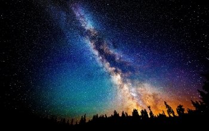

Spot the moment Venus reaches dichotomy
You can also watch the ISS fly overhead and enjoy the First Quarter Moon from October 22 to 29.

In the late 1700s, Charles Messier created his famous catalog to identify objects that he didn’t want to mistake for comets. Thus, most of the entries in his list are small and appear fuzzy at low power. One such object is the globular cluster M72 in Aquarius the Water-bearer. Look south after dark tonight to find it about 3.4° south-southeast of magnitude 3.8 Epsilon (ϵ) Aquarii. It’s currently sitting between bright Jupiter (to its southeast) and Alpha (α) Capricorni to its southwest. At magnitude 9.2, M72 is the faintest globular cluster — an old grouping of stars — in Messier’s catalog. You’ll need binoculars or a telescope to spot it, as it falls well below the magnitude your naked eyes can see. The cluster stretches nearly 7' across and sits some 55,000 light-years from Earth — but is currently moving in our direction at a speedy 160 miles (255 kilometers) per second.
As it orbits the Sun closer in than Earth, the planet Venus undergoes changing phases. Today, that phase reaches 50 percent, leaving Venus’ 24"-wide disk half-lit. But there’s a catch: Thanks to a phenomenon called Schröter’s effect, Venus can appear to reach this half-lit phase, or dichotomy, earlier or later than expected. When it’s visible in the evening sky, as it is now, the planet tends to reach dichotomy early. So, if you’re reading this column ahead of time, try observing Venus earlier in the week to see if it already looks half-lit to you. The planet currently sets a little over two hours after the Sun and hangs against the stars of the large constellation Ophiuchus. But you won’t need any help to find it, blazing at magnitude –4.5 in the twilight sky.
Astronomers still aren’t entirely sure what causes Schröter’s effect, but believe it may be a combination of the way Venus’ atmosphere scatters light and fact that the terminator separating night from day appears darker near the center.
Source: Astronomy.com
Back to News